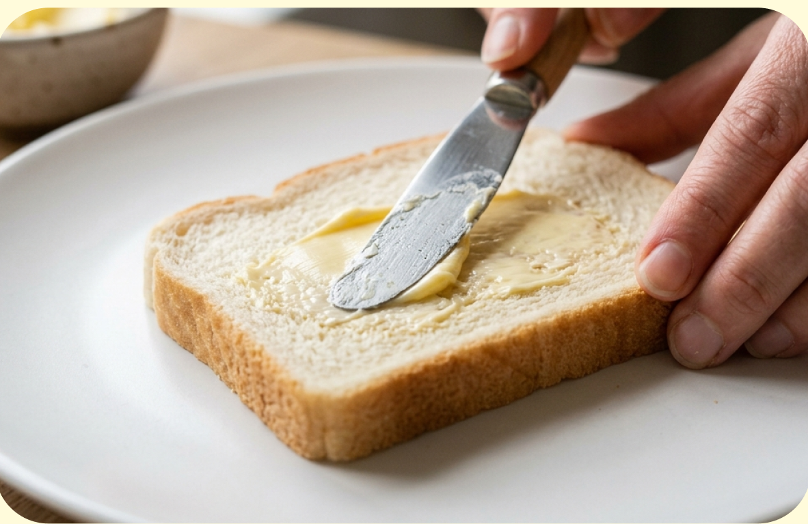
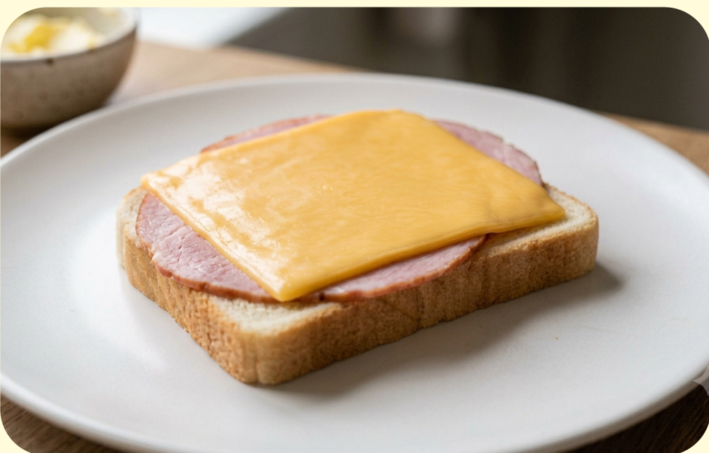
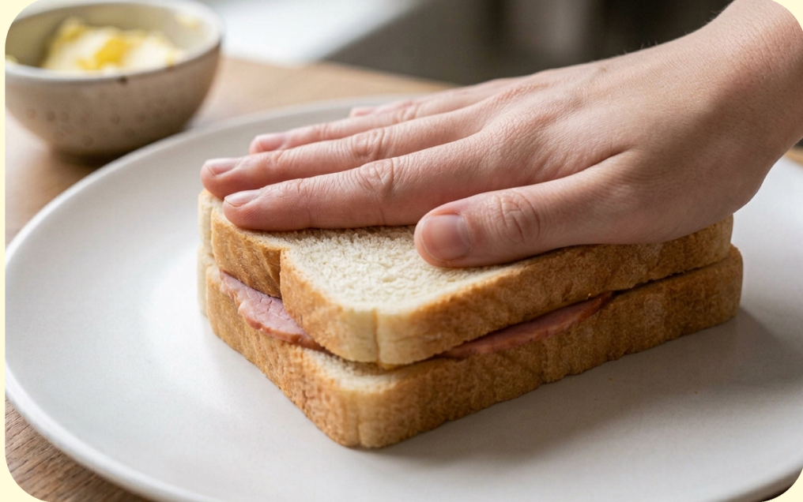
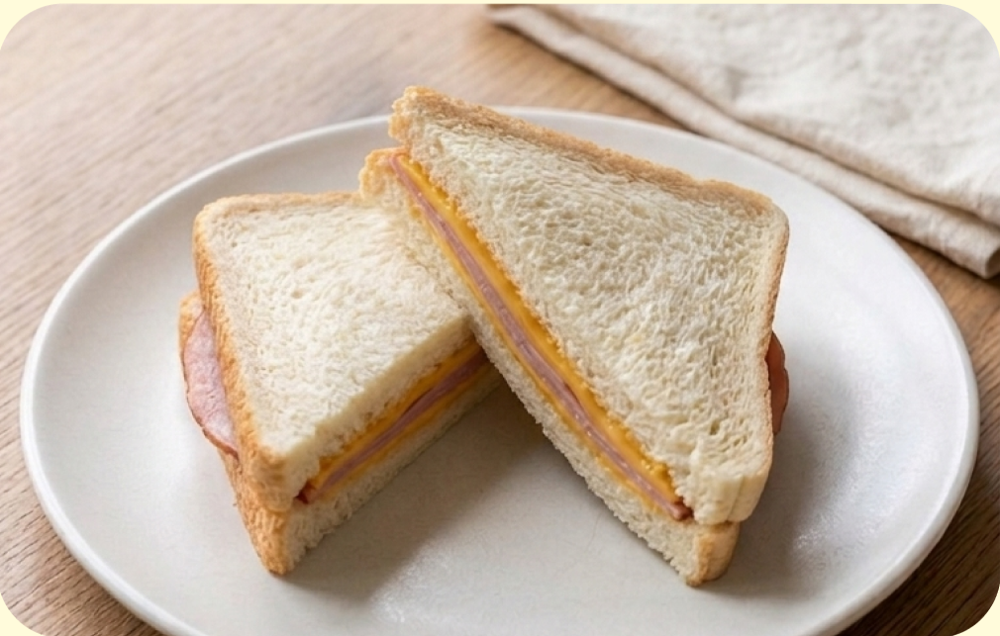

難易度１ ★☆☆
材料（一人分）
- ・食パン ２枚
- ・ハム １〜２枚
- ・スライスチーズ １枚
必要な道具
- ・切る場合は包丁
- ・まな板
- ・お皿
注目ポイント
- 🔥 焼き加減に注意
- 💡 アレンジしても◎
作り方
① パンの内側にバターを塗ります。 お好みでマヨネーズを塗ってもおいしいです。

② １枚のパンにハムとチーズをのせます。

③ もう１枚のパンを重ねて、 手で軽く押さえます。

⑤ お皿に盛り付けたら完成です。 トースターで軽く焼いてもおいしく食べられます。

調理のコツ
具材を端まで入れすぎると、
食べるときにはみ出しやすくなります。
少し中央によせて挟むと、
食べやすく仕上がります。
アレンジ
レタスやきゅうりを入れると
さっぱりした味になります。
トースターで軽く焼くと、
ホットサンド風になります。
好きな具材でアレンジしてみましょう。